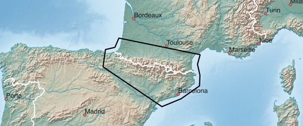

Gebirge - verfügbare Karten:
| Westalpen | Ostalpen |
| Karpaten | Pyrenäen |
Hinweise zum Download:
- Klick auf das Netbook Icon im PC-Browser: die Karte wird auf den Personal-Computer geladen
- Klick auf das Locus Map Icon im Android-Browser: Karte+Design werden nach Locus Map geladen
- Klick auf das OruxMaps Icon im Android-Browser: die Karte wird nach OruxMaps geladen
Westalpen,Ostalpen:

| Westalpen ALPS+WEST 766 MB |
| Ostalpen ALPS+EAST 670 MB |
Karpaten:

| Karpaten CARPATHIAN 485 MB |
Pyrenäen:

| Pyrenäen PYRENEES 212 MB |